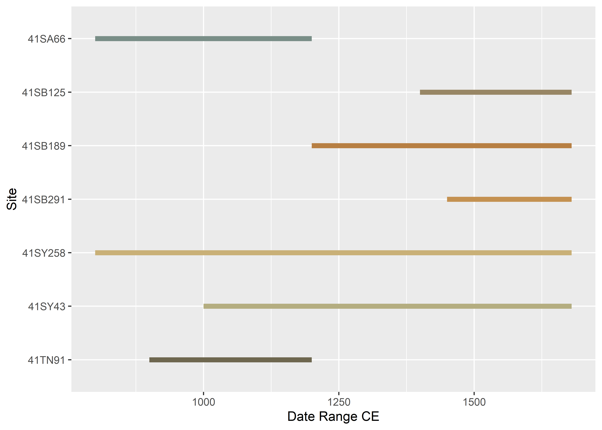
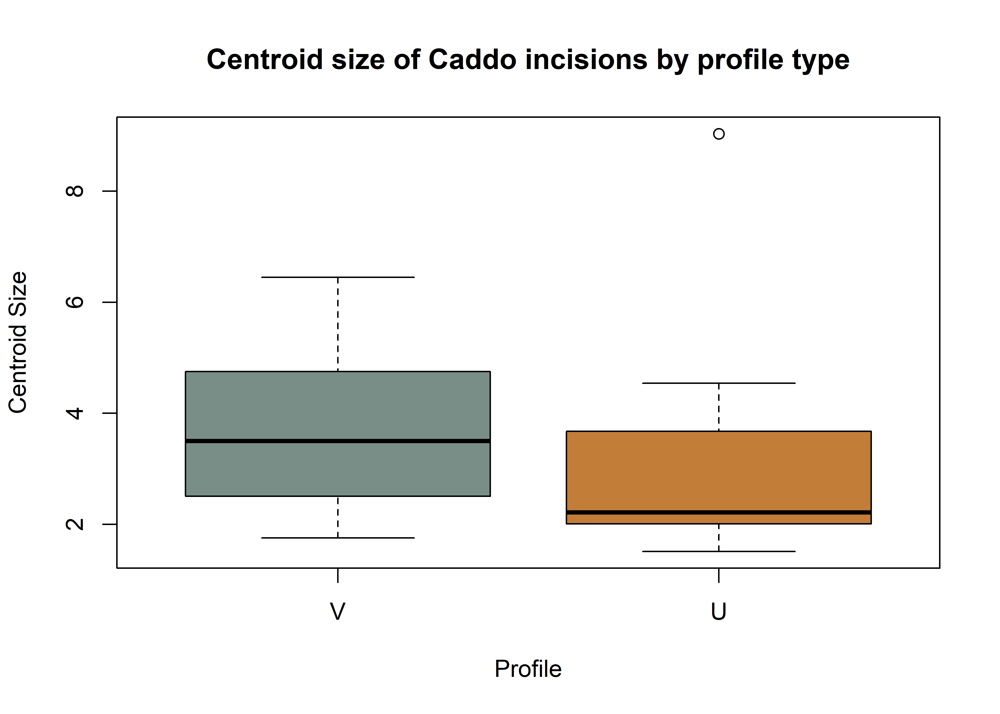
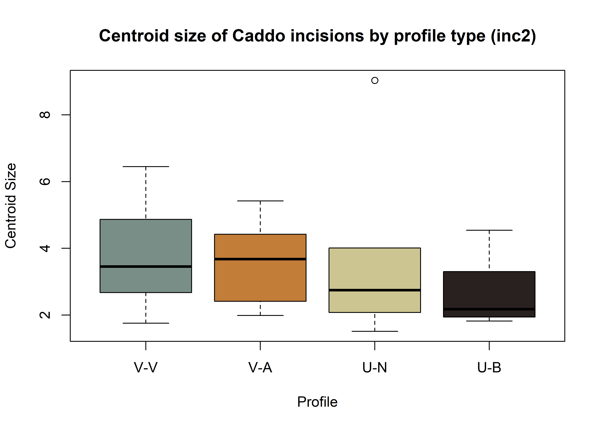
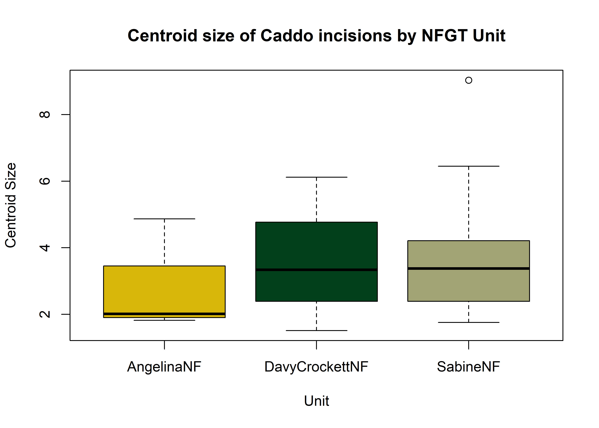
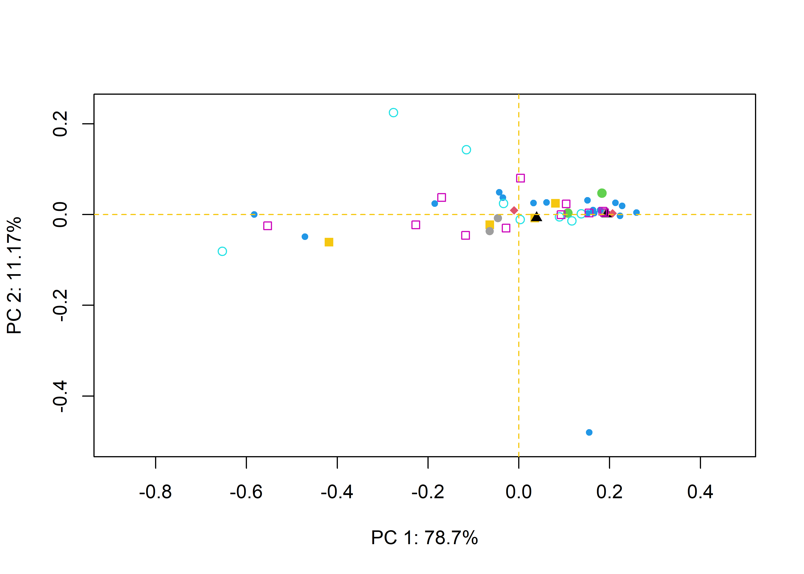
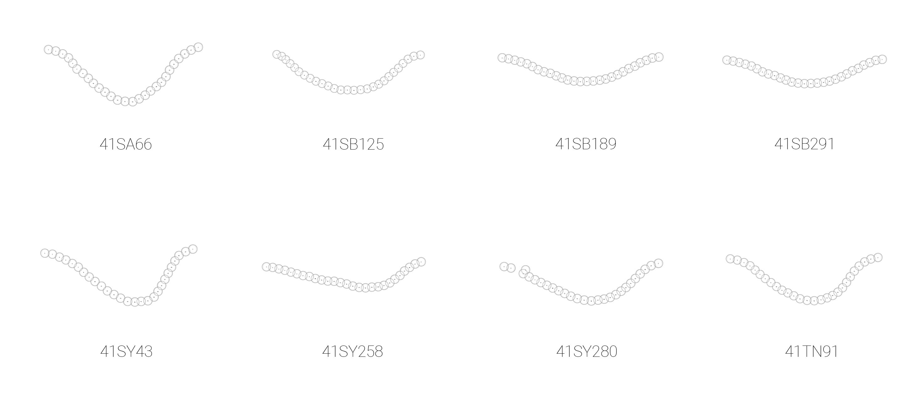

This volume is in Open Review. I want your feedback to make the volume better for you and other readers. To add your annotation, select some text and then click the on the pop-up menu. To see the annotations of others, click the in the upper right hand corner of the page
Chapter 5 Archaeological sample - analysis
5.1 Temporal and spatial dynamics
The sample used in this study was generated through archaeological surveys, and there are no chronometric dates for any of the sites. Temporal assignments employ relative dates. Therefore, if a site spans the Woodland period through CE 1200 (41SA66), the date range is considered to range from 500 BCE to CE 1200. However, for this study only those temporal assignments associated with the Caddo components are plotted since that is the component of interest.
# library(devtools)
# devtools::install_github("geomorphR/geomorph", ref = "Stable", build_vignettes = TRUE)
library(geomorph)
library(ggplot2)
library(wesanderson)
# set wd
setwd(getwd())
# gantt chart of (possible) relative dates for ceramic components
temp<-data.frame(Site=c('41SA66','41SB125','41SB189','41SB189','41SB291','41SY43','41SY43','41SY258','41SY280','41TN91'),
Date_Range=c(800,1200,1000,1400,1200,1000,1450,800,1400,900), # in years BCE/CE
end=c(1200,1680,1200,1680,1680,1300,1680,1680,1680,1200) # in years CE
)
temp.site<-ggplot(temp,aes(x=Date_Range,xend=end,y=Site,yend=Site,color=Site)) +
geom_segment(size=2) +
scale_color_brewer(palette = "Dark2") +
theme(legend.position = "none")
# render figure
temp.site
5.2 Generalised Procrustes Analysis
# read GM data
source('readmulti.csv.R')
# read .csv files
setwd("./data1")
filelist <- list.files(pattern = ".csv")
coords <- readmulti.csv(filelist)
setwd("../")
# read qualitative data
qdata <- read.csv("qdata1.csv",header=TRUE,row.names=1)
qdata <- qdata[match(dimnames(coords)[[3]],rownames(qdata)),]
qdata## site unit county
## 41sa66-4 sa66 angelinaNF san-augustine
## 41sa66-5 sa66 angelinaNF san-augustine
## 41sa66-6 sa66 angelinaNF san-augustine
## 41sa66 sa66 angelinaNF san-augustine
## 41sb125-11-lot50 sb125 sabineNF sabine
## 41sb125-2-lot100 sb125 sabineNF sabine
## 41sb125-3-lot99 sb125 sabineNF sabine
## 41sb189-10-lot17 sb189 sabineNF sabine
## 41sb189-9-lot17 sb189 sabineNF sabine
## 41sb291-4-lot245 sb291 sabineNF sabine
## 41sb291-9-lot229 sb291 sabineNF sabine
## 41sy258-st2-1020 sy258 sabineNF shelby
## 41sy258-st3-2030 sy258 sabineNF shelby
## 41sy280-101 sy280 sabineNF shelby
## 41sy280-11 sy280 sabineNF shelby
## 41sy280-127 sy280 sabineNF shelby
## 41sy280-18 sy280 sabineNF shelby
## 41sy280-20 sy280 sabineNF shelby
## 41sy280-82 sy280 sabineNF shelby
## 41sy280-84 sy280 sabineNF shelby
## 41sy280-lot107 sy280 sabineNF shelby
## 41sy280-lot112 sy280 sabineNF shelby
## 41sy280-lot125 sy280 sabineNF shelby
## 41sy280-lot31 sy280 sabineNF shelby
## 41sy280-lot48 sy280 sabineNF shelby
## 41sy280-lot50 sy280 sabineNF shelby
## 41sy280-lot52 sy280 sabineNF shelby
## 41sy280-lot90 sy280 sabineNF shelby
## 41sy280-lot91 sy280 sabineNF shelby
## 41sy280-lot94 sy280 sabineNF shelby
## 41sy43-1 sy43 sabineNF shelby
## 41sy43-13-1191 sy43 sabineNF shelby
## 41sy43-19 sy43 sabineNF shelby
## 41sy43-fsn1-830 sy43 sabineNF shelby
## 41sy43-k2-2737 sy43 sabineNF shelby
## 41sy43-k6-1020 sy43 sabineNF shelby
## 41sy43-k8-17 sy43 sabineNF shelby
## 41sy43-lot1035 sy43 sabineNF shelby
## 41tn91-u1-010 tn91 davycNF trinity
## 41tn91-u1-2030 tn91 davycNF trinity
## 41tn91-u2-1020 tn91 davycNF trinity
## 41tn91-u2-lot17 tn91 davycNF trinity
## 41tn91-u3-2030 tn91 davycNF trinity
## 41tn91-u4-020 tn91 davycNF trinity
## 41tn91-u4-4050 tn91 davycNF trinity
## 41tn91-u4-5060 tn91 davycNF trinity
## 41tn91-u6-3040 tn91 davycNF trinity
## 41tn91-u7-3040 tn91 davycNF trinity
## 41tn91-u8-1020 tn91 davycNF trinity# gpa
Y.gpa <- gpagen(coords, PrinAxes = TRUE, ProcD = TRUE, Proj = TRUE, print.progress = FALSE)
# gpa plot
knitr::include_graphics('images/gpa3d.png')
fig.cap="Results of generalized Procrustes analysis."
# geomorph data frame
gdf <- geomorph.data.frame(shape = Y.gpa$coords, size = Y.gpa$Csize, site = qdata$site, unit = qdata$unit, county = qdata$county)
csz <- Y.gpa$Csize # attribute for boxplot
sit <- qdata$site # attribute for boxplot
cty <- qdata$county # attribute for boxplot
unt <- qdata$unit # attribute for boxplot
# boxplot of incision (centroid) size by site
boxplot(csz~sit,
main = "Centroid size of Caddo incisions by Site",
names = c("SA66","SB125","SB189","SB291","SY258","SY280","SY43","TN91"),
xlab = "Site",
ylab = "Centroid Size",
col = wes_palette("Cavalcanti1"),
)
fig.cap = "Boxplot of incision profiles for the 41SA66, 41SB125, 41SB189, 41SB291, 41SY258, 41SY280, 41SY43, and 41TN91 sites."
# boxplot of incision (centroid) size by county (potential east-west spatial differences)
boxplot(csz~cty,
main = "Centroid size of Caddo incisions by County",
names = c("San Augustine","Sabine","Shelby","Trinity"),
xlab = "County",
ylab = "Centroid Size",
col = wes_palette("Cavalcanti1"),
)
fig.cap = "Boxplot of incision profiles for San Augustine, Sabine, Shelby, and Trinity Counties."
# boxplot of incision (centroid) size by nfgt unit
boxplot(csz~unt,
main = "Centroid size of Caddo incisions by NFGT Unit",
names = c("AngelinaNF", "DavyCrockettNF", "SabineNF"),
xlab = "Unit",
ylab = "Centroid Size",
col = wes_palette("Cavalcanti1"),
)
5.3 Principal Components Analysis
## Importance of components:
## PC1 PC2 PC3 PC4 PC5 PC6 PC7
## Tips variance 0.05005241 0.007101587 0.004207237 0.001010877 0.0004000871 0.0002918061 0.0001356203
## Proportion of variance 0.78696355 0.111656752 0.066149506 0.015893807 0.0062904856 0.0045880066 0.0021323292
## Cumulative Proportion 0.78696355 0.898620306 0.964769812 0.980663619 0.9869541044 0.9915421110 0.9936744402
## PC8 PC9 PC10 PC11 PC12 PC13
## Tips variance 0.0001049297 0.0000527297 4.893199e-05 4.140238e-05 2.795772e-05 2.477753e-05
## Proportion of variance 0.0016497881 0.0008290579 7.693474e-04 6.509610e-04 4.395734e-04 3.895719e-04
## Cumulative Proportion 0.9953242283 0.9961532862 9.969226e-01 9.975736e-01 9.980132e-01 9.984027e-01
## PC14 PC15 PC16 PC17 PC18 PC19
## Tips variance 1.839935e-05 1.553619e-05 1.245841e-05 1.099519e-05 8.857840e-06 6.205629e-06
## Proportion of variance 2.892891e-04 2.442723e-04 1.958810e-04 1.728750e-04 1.392700e-04 9.756980e-05
## Cumulative Proportion 9.986920e-01 9.989363e-01 9.991322e-01 9.993051e-01 9.994443e-01 9.995419e-01
## PC20 PC21 PC22 PC23 PC24 PC25
## Tips variance 4.605748e-06 4.189723e-06 3.711596e-06 2.789934e-06 2.436159e-06 2.014312e-06
## Proportion of variance 7.241520e-05 6.587413e-05 5.835664e-05 4.386554e-05 3.830322e-05 3.167061e-05
## Cumulative Proportion 9.996143e-01 9.996802e-01 9.997385e-01 9.997824e-01 9.998207e-01 9.998524e-01
## PC26 PC27 PC28 PC29 PC30 PC31
## Tips variance 1.668968e-06 1.638174e-06 1.185650e-06 9.495449e-07 6.727711e-07 5.815500e-07
## Proportion of variance 2.624083e-05 2.575666e-05 1.864172e-05 1.492950e-05 1.057784e-05 9.143588e-06
## Cumulative Proportion 9.998786e-01 9.999044e-01 9.999230e-01 9.999380e-01 9.999485e-01 9.999577e-01
## PC32 PC33 PC34 PC35 PC36 PC37
## Tips variance 5.340935e-07 4.357276e-07 3.526829e-07 3.270684e-07 2.945186e-07 2.223463e-07
## Proportion of variance 8.397439e-06 6.850854e-06 5.545159e-06 5.142428e-06 4.630653e-06 3.495905e-06
## Cumulative Proportion 9.999661e-01 9.999729e-01 9.999785e-01 9.999836e-01 9.999882e-01 9.999917e-01
## PC38 PC39 PC40 PC41 PC42 PC43
## Tips variance 1.565223e-07 1.011302e-07 8.479653e-08 6.032788e-08 4.167519e-08 3.236851e-08
## Proportion of variance 2.460967e-06 1.590049e-06 1.333238e-06 9.485226e-07 6.552502e-07 5.089233e-07
## Cumulative Proportion 9.999942e-01 9.999958e-01 9.999971e-01 9.999981e-01 9.999987e-01 9.999992e-01
## PC44 PC45 PC46
## Tips variance 2.524843e-08 1.466766e-08 8.934916e-09
## Proportion of variance 3.969758e-07 2.306165e-07 1.404818e-07
## Cumulative Proportion 9.999996e-01 9.999999e-01 1.000000e+00# set plot parameters
site <- qdata$site
pch.gps.site <- c(15:22)[as.factor(site)]
col.gps.site <- wes_palette("Cavalcanti1")[as.factor(site)]
# plotPCAbySite
pca.plot1 <- plot(pca, asp = 1,
pch = pch.gps.site,
col = pch.gps.site)
5.4 Define models
fit.size <- procD.lm(shape ~ size, data = gdf, print.progress = FALSE, iter = 9999)
fit.sizesite <- procD.lm(size ~ site, data = gdf, print.progress = FALSE, iter = 9999)
fit.sizeunit <- procD.lm(size ~ unit, data = gdf, print.progress = FALSE, iter = 9999)
fit.sizecounty <- procD.lm(size ~ county, data = gdf, print.progress = FALSE, iter = 9999)
fit.shapesite <- procD.lm(shape ~ site, data = gdf, print.progress = FALSE, iter = 9999)
fit.shapeunit <- procD.lm(shape ~ unit, data = gdf, print.progress = FALSE, iter = 9999)
fit.shapecounty <- procD.lm(shape ~ county, data = gdf, print.progress = FALSE, iter = 9999)5.5 Size/Shape ~ Site?
##
## Analysis of Variance, using Residual Randomization
## Permutation procedure: Randomization of null model residuals
## Number of permutations: 10000
## Estimation method: Ordinary Least Squares
## Sums of Squares and Cross-products: Type I
## Effect sizes (Z) based on F distributions
##
## Df SS MS Rsq F Z Pr(>F)
## site 7 29.352 4.1932 0.25448 1.9993 1.3088 0.0902 .
## Residuals 41 85.990 2.0973 0.74552
## Total 48 115.342
## ---
## Signif. codes: 0 '***' 0.001 '**' 0.01 '*' 0.05 '.' 0.1 ' ' 1
##
## Call: procD.lm(f1 = size ~ site, iter = 9999, data = gdf, print.progress = FALSE)# pairwise comparison of LS means = which differ?
sz.site <- pairwise(fit.sizesite, groups = qdata$site)
summary(sz.site, confidence = 0.95, test.type = "dist")##
## Pairwise comparisons
##
## Groups: sa66 sb125 sb189 sb291 sy258 sy280 sy43 tn91
##
## RRPP: 10000 permutations
##
## LS means:
## Vectors hidden (use show.vectors = TRUE to view)
##
## Pairwise distances between means, plus statistics
## d UCL (95%) Z Pr > d
## sa66:sb125 0.37070954 2.327725 -0.78770535 0.7501
## sa66:sb189 0.03628637 2.682801 -1.26279838 0.9766
## sa66:sb291 3.25505698 2.659840 2.65864316 0.0184
## sa66:sy258 3.23631988 2.632310 2.66412372 0.0182
## sa66:sy280 0.84892609 1.683798 0.30938152 0.3239
## sa66:sy43 0.47423803 1.839224 -0.49765658 0.6207
## sa66:tn91 0.96472603 1.755851 0.44314462 0.2949
## sb125:sb189 0.40699591 2.816629 -0.82548809 0.7661
## sb125:sb291 2.88434744 2.795282 2.02024902 0.0430
## sb125:sy258 2.86561034 2.788938 2.01979898 0.0442
## sb125:sy280 0.47821654 1.869334 -0.50245503 0.6212
## sb125:sy43 0.10352848 2.037844 -1.15694770 0.9188
## sb125:tn91 0.59401648 1.970749 -0.33573766 0.5531
## sb189:sb291 3.29134335 3.099322 2.14713976 0.0380
## sb189:sy258 3.27260625 3.075023 2.13175486 0.0387
## sb189:sy280 0.88521246 2.208534 -0.05576814 0.4430
## sb189:sy43 0.51052439 2.374975 -0.63447302 0.6891
## sb189:tn91 1.00101239 2.297374 0.07269097 0.3989
## sb291:sy258 0.01873710 3.087206 -1.26177194 0.9905
## sb291:sy280 2.40613089 2.218432 2.08246230 0.0378
## sb291:sy43 2.78081896 2.399302 2.40719266 0.0288
## sb291:tn91 2.29033096 2.338246 1.81737787 0.0528
## sy258:sy280 2.38739379 2.199548 2.10769776 0.0374
## sy258:sy43 2.76208185 2.346330 2.42802984 0.0251
## sy258:tn91 2.27159386 2.289157 1.83922779 0.0520
## sy280:sy43 0.37468806 1.290900 -0.39753557 0.5750
## sy280:tn91 0.11579994 1.178315 -1.04454452 0.8523
## sy43:tn91 0.49048800 1.378876 -0.20294743 0.5048# pairwise distance between variances = standardization?
summary(sz.site, confidence = 0.95, test.type = "var")##
## Pairwise comparisons
##
## Groups: sa66 sb125 sb189 sb291 sy258 sy280 sy43 tn91
##
## RRPP: 10000 permutations
##
##
## Observed variances by group
##
## sa66 sb125 sb189 sb291 sy258 sy280 sy43 tn91
## 1.6019726 0.3884270 0.7826209 0.2639501 9.7206548 1.6467141 0.8685141 1.9945392
##
## Pairwise distances between variances, plus statistics
## d UCL (95%) Z Pr > d
## sa66:sb125 1.21354564 3.558445 -0.16974966 0.4729
## sa66:sb189 0.81935170 4.178321 -0.55909544 0.6299
## sa66:sb291 1.33802248 4.185641 -0.15070220 0.4554
## sa66:sy258 8.11868216 4.141382 5.10668620 0.0006
## sa66:sy280 0.04474148 2.427549 -1.28739850 0.9757
## sa66:sy43 0.73345848 2.782417 -0.47055540 0.6127
## sa66:tn91 0.39256655 2.599001 -0.83580215 0.7734
## sb125:sb189 0.39419394 4.375915 -0.88074878 0.8081
## sb125:sb291 0.12447683 4.411653 -1.06587957 0.9349
## sb125:sy258 9.33222780 4.384969 5.60261935 0.0003
## sb125:sy280 1.25828712 2.862510 0.12116179 0.3745
## sb125:sy43 0.48008716 3.072595 -0.78273702 0.7562
## sb125:tn91 1.60611219 2.910920 0.42993941 0.2755
## sb189:sb291 0.51867077 4.848345 -0.77956787 0.7467
## sb189:sy258 8.93803386 4.862716 4.61073938 0.0007
## sb189:sy280 0.86409318 3.746098 -0.46324954 0.6419
## sb189:sy43 0.08589322 3.850592 -1.13819154 0.9627
## sb189:tn91 1.21191825 3.759639 -0.15770395 0.4763
## sb291:sy258 9.45670463 4.850771 5.01662554 0.0002
## sb291:sy280 1.38276395 3.699478 0.02319271 0.3857
## sb291:sy43 0.60456400 3.853317 -0.68879375 0.7280
## sb291:tn91 1.73058903 3.706781 0.31693488 0.2774
## sy258:sy280 8.07394068 3.636783 6.31293177 0.0007
## sy258:sy43 8.85214064 3.790914 6.40176519 0.0003
## sy258:tn91 7.72611561 3.740032 5.66899815 0.0011
## sy280:sy43 0.77819996 1.941683 -0.04333318 0.4452
## sy280:tn91 0.34782507 1.728787 -0.72890816 0.7181
## sy43:tn91 1.12602503 2.115523 0.38271730 0.3062##
## Analysis of Variance, using Residual Randomization
## Permutation procedure: Randomization of null model residuals
## Number of permutations: 10000
## Estimation method: Ordinary Least Squares
## Sums of Squares and Cross-products: Type I
## Effect sizes (Z) based on F distributions
##
## Df SS MS Rsq F Z Pr(>F)
## site 7 0.27445 0.039207 0.0899 0.5786 -0.98313 0.8421
## Residuals 41 2.77844 0.067767 0.9101
## Total 48 3.05289
##
## Call: procD.lm(f1 = shape ~ site, iter = 9999, data = gdf, print.progress = FALSE)# pairwise comparison of LS means = which differ?
sh.site <- pairwise(fit.shapesite, groups = qdata$site)
summary(sh.site, confidence = 0.95, test.type = "dist")##
## Pairwise comparisons
##
## Groups: sa66 sb125 sb189 sb291 sy258 sy280 sy43 tn91
##
## RRPP: 10000 permutations
##
## LS means:
## Vectors hidden (use show.vectors = TRUE to view)
##
## Pairwise distances between means, plus statistics
## d UCL (95%) Z Pr > d
## sa66:sb125 0.12145883 0.3450818 -0.46749623 0.6300
## sa66:sb189 0.21055726 0.3988002 0.20423430 0.3564
## sa66:sb291 0.19493244 0.4022954 0.05273185 0.4065
## sa66:sy258 0.24408304 0.4012386 0.48128187 0.2801
## sa66:sy280 0.13742617 0.2471909 0.19689240 0.3750
## sa66:sy43 0.07729735 0.2757219 -0.79218388 0.7722
## sa66:tn91 0.06600043 0.2647030 -0.90417309 0.8123
## sb125:sb189 0.10402335 0.4183134 -0.76208067 0.7288
## sb125:sb291 0.08303756 0.4197122 -0.94411079 0.8126
## sb125:sy258 0.13712129 0.4188491 -0.49645123 0.6181
## sb125:sy280 0.05638783 0.2750494 -1.04530325 0.8853
## sb125:sy43 0.14403705 0.2991531 -0.04127029 0.4458
## sb125:tn91 0.07177640 0.2871532 -0.89080189 0.8073
## sb189:sb291 0.06421691 0.4635808 -1.09658826 0.8900
## sb189:sy258 0.06251043 0.4643831 -1.11364117 0.8962
## sb189:sy280 0.09196580 0.3381119 -0.70404682 0.7115
## sb189:sy43 0.21968370 0.3557699 0.50106830 0.2643
## sb189:tn91 0.15311745 0.3478969 -0.11002246 0.4527
## sb291:sy258 0.06790286 0.4668935 -1.09213098 0.8791
## sb291:sy280 0.07474606 0.3476519 -0.89385967 0.8208
## sb291:sy43 0.19943102 0.3583117 0.26449434 0.3297
## sb291:tn91 0.13681224 0.3492544 -0.30179952 0.5295
## sy258:sy280 0.11493667 0.3391286 -0.49217854 0.6161
## sy258:sy43 0.23900538 0.3645239 0.64089249 0.2291
## sy258:tn91 0.18202426 0.3490306 0.15170369 0.3650
## sy280:sy43 0.14196417 0.1902481 0.94417481 0.1671
## sy280:tn91 0.07961867 0.1742751 -0.16336003 0.4676
## sy43:tn91 0.07811097 0.2083811 -0.48053675 0.6318# pairwise distance between variances = standardization?
summary(sh.site, confidence = 0.95, test.type = "var")##
## Pairwise comparisons
##
## Groups: sa66 sb125 sb189 sb291 sy258 sy280 sy43 tn91
##
## RRPP: 10000 permutations
##
##
## Observed variances by group
##
## sa66 sb125 sb189 sb291 sy258 sy280 sy43 tn91
## 0.040654299 0.016206981 0.006324086 0.014480775 0.003271747 0.075124048 0.083820080 0.051943752
##
## Pairwise distances between variances, plus statistics
## d UCL (95%) Z Pr > d
## sa66:sb125 0.024447318 0.13711244 -0.60632440 0.5984
## sa66:sb189 0.034330213 0.16501950 -0.42006217 0.5261
## sa66:sb291 0.026173524 0.16383110 -0.55995428 0.5717
## sa66:sy258 0.037382552 0.16482315 -0.35239455 0.5063
## sa66:sy280 0.034469749 0.09410780 -0.24992799 0.5476
## sa66:sy43 0.043165781 0.10929276 -0.05036229 0.4520
## sa66:tn91 0.011289453 0.10069436 -1.00255695 0.8478
## sb125:sb189 0.009882895 0.16842682 -0.82717846 0.7657
## sb125:sb291 0.001726206 0.17347273 -0.98003228 0.9607
## sb125:sy258 0.012935234 0.17297892 -0.79231511 0.7242
## sb125:sy280 0.058917067 0.10335778 0.39137455 0.2736
## sb125:sy43 0.067613099 0.11602194 0.50629610 0.2789
## sb125:tn91 0.035736771 0.10881156 -0.31777942 0.5616
## sb189:sb291 0.008156689 0.18322382 -0.80429909 0.7960
## sb189:sy258 0.003052339 0.18476430 -0.87640067 0.9238
## sb189:sy280 0.068799962 0.14309146 0.38644663 0.2304
## sb189:sy43 0.077495994 0.14372956 0.50549578 0.2453
## sb189:tn91 0.045619666 0.14505729 -0.15406553 0.4434
## sb291:sy258 0.011209029 0.18592959 -0.77187150 0.7392
## sb291:sy280 0.060643272 0.14364401 0.19271677 0.2792
## sb291:sy43 0.069339305 0.14623556 0.31409507 0.2892
## sb291:tn91 0.037462977 0.14466035 -0.34100149 0.5395
## sy258:sy280 0.071852301 0.14515445 0.44185034 0.2165
## sy258:sy43 0.080548334 0.14972572 0.53266361 0.2363
## sy258:tn91 0.048672006 0.14680726 -0.08626802 0.4103
## sy280:sy43 0.008696033 0.07554621 -0.99091788 0.8331
## sy280:tn91 0.023180296 0.06826482 -0.24619928 0.5233
## sy43:tn91 0.031876328 0.08205715 -0.10336001 0.46975.6 Size/Shape ~ Unit?
##
## Analysis of Variance, using Residual Randomization
## Permutation procedure: Randomization of null model residuals
## Number of permutations: 10000
## Estimation method: Ordinary Least Squares
## Sums of Squares and Cross-products: Type I
## Effect sizes (Z) based on F distributions
##
## Df SS MS Rsq F Z Pr(>F)
## unit 2 3.335 1.6673 0.02891 0.6847 0.13405 0.5119
## Residuals 46 112.008 2.4350 0.97109
## Total 48 115.342
##
## Call: procD.lm(f1 = size ~ unit, iter = 9999, data = gdf, print.progress = FALSE)# pairwise comparison of LS means = which differ?
sz.unit <- pairwise(fit.sizeunit, groups = qdata$unit)
summary(sz.unit, confidence = 0.95, test.type = "dist")##
## Pairwise comparisons
##
## Groups: angelinaNF davycNF sabineNF
##
## RRPP: 10000 permutations
##
## LS means:
## Vectors hidden (use show.vectors = TRUE to view)
##
## Pairwise distances between means, plus statistics
## d UCL (95%) Z Pr > d
## angelinaNF:davycNF 0.96472603 1.755851 0.4431446 0.2949
## angelinaNF:sabineNF 0.94846933 1.569764 0.5910503 0.2463
## davycNF:sabineNF 0.01625669 1.050857 -1.3048870 0.9773# pairwise distance between variances = standardization?
summary(sz.unit, confidence = 0.95, test.type = "var")##
## Pairwise comparisons
##
## Groups: angelinaNF davycNF sabineNF
##
## RRPP: 10000 permutations
##
##
## Observed variances by group
##
## angelinaNF davycNF sabineNF
## 1.601973 1.994539 2.460580
##
## Pairwise distances between variances, plus statistics
## d UCL (95%) Z Pr > d
## angelinaNF:davycNF 0.3925666 6.399278 -0.7260704 0.8072
## angelinaNF:sabineNF 0.8586073 6.454379 -0.3594053 0.5744
## davycNF:sabineNF 0.4660408 3.015764 -0.8585883 0.7832##
## Analysis of Variance, using Residual Randomization
## Permutation procedure: Randomization of null model residuals
## Number of permutations: 10000
## Estimation method: Ordinary Least Squares
## Sums of Squares and Cross-products: Type I
## Effect sizes (Z) based on F distributions
##
## Df SS MS Rsq F Z Pr(>F)
## unit 2 0.07093 0.035463 0.02323 0.5471 -0.41176 0.6721
## Residuals 46 2.98197 0.064825 0.97677
## Total 48 3.05289
##
## Call: procD.lm(f1 = shape ~ unit, iter = 9999, data = gdf, print.progress = FALSE)# pairwise comparison of LS means = which differ?
sh.unit <- pairwise(fit.shapeunit, groups = qdata$unit)
summary(sh.unit, confidence = 0.95, test.type = "dist")##
## Pairwise comparisons
##
## Groups: angelinaNF davycNF sabineNF
##
## RRPP: 10000 permutations
##
## LS means:
## Vectors hidden (use show.vectors = TRUE to view)
##
## Pairwise distances between means, plus statistics
## d UCL (95%) Z Pr > d
## angelinaNF:davycNF 0.06600043 0.2647030 -0.9041731 0.8123
## angelinaNF:sabineNF 0.12046607 0.2354948 0.0360844 0.4219
## davycNF:sabineNF 0.05918481 0.1541155 -0.4655855 0.6260# pairwise distance between variances = standardization?
summary(sh.unit, confidence = 0.95, test.type = "var")##
## Pairwise comparisons
##
## Groups: angelinaNF davycNF sabineNF
##
## RRPP: 10000 permutations
##
##
## Observed variances by group
##
## angelinaNF davycNF sabineNF
## 0.04065430 0.05194375 0.06611674
##
## Pairwise distances between variances, plus statistics
## d UCL (95%) Z Pr > d
## angelinaNF:davycNF 0.01128945 0.11496561 -1.0097492 0.8607
## angelinaNF:sabineNF 0.02546244 0.10444275 -0.6434500 0.7814
## davycNF:sabineNF 0.01417299 0.06382465 -0.7011372 0.70825.7 Size/Shape ~ County?
##
## Analysis of Variance, using Residual Randomization
## Permutation procedure: Randomization of null model residuals
## Number of permutations: 10000
## Estimation method: Ordinary Least Squares
## Sums of Squares and Cross-products: Type I
## Effect sizes (Z) based on F distributions
##
## Df SS MS Rsq F Z Pr(>F)
## county 3 3.484 1.1612 0.0302 0.4672 -0.41867 0.7101
## Residuals 45 111.858 2.4857 0.9698
## Total 48 115.342
##
## Call: procD.lm(f1 = size ~ county, iter = 9999, data = gdf, print.progress = FALSE)# pairwise comparison of LS means = which differ?
sz.county <- pairwise(fit.sizecounty, groups = qdata$county)
summary(sz.county, confidence = 0.95, test.type = "dist")##
## Pairwise comparisons
##
## Groups: sabine san-augustine shelby trinity
##
## RRPP: 10000 permutations
##
## LS means:
## Vectors hidden (use show.vectors = TRUE to view)
##
## Pairwise distances between means, plus statistics
## d UCL (95%) Z Pr > d
## sabine:san-augustine 1.07852427 1.925238 0.5094786 0.2700
## sabine:shelby 0.16377288 1.269953 -0.9252746 0.8068
## sabine:trinity 0.11379824 1.467294 -1.0816604 0.8857
## san-augustine:shelby 0.91475139 1.601641 0.5011701 0.2694
## san-augustine:trinity 0.96472603 1.755851 0.4431446 0.2949
## shelby:trinity 0.04997464 1.096645 -1.2016654 0.9304# pairwise distance between variances = standardization?
summary(sz.county, confidence = 0.95, test.type = "var")##
## Pairwise comparisons
##
## Groups: sabine san-augustine shelby trinity
##
## RRPP: 10000 permutations
##
##
## Observed variances by group
##
## sabine san-augustine shelby trinity
## 2.388803 1.601973 2.473667 1.994539
##
## Pairwise distances between variances, plus statistics
## d UCL (95%) Z Pr > d
## sabine:san-augustine 0.78683065 6.594922 -0.5302022 0.6159
## sabine:shelby 0.08486338 4.236625 -1.0397007 0.9554
## sabine:trinity 0.39426410 4.344014 -0.8647171 0.7907
## san-augustine:shelby 0.87169403 6.541165 -0.3685743 0.5704
## san-augustine:trinity 0.39256655 6.487580 -0.7203759 0.8031
## shelby:trinity 0.47912748 3.072151 -0.8873498 0.7826##
## Analysis of Variance, using Residual Randomization
## Permutation procedure: Randomization of null model residuals
## Number of permutations: 10000
## Estimation method: Ordinary Least Squares
## Sums of Squares and Cross-products: Type I
## Effect sizes (Z) based on F distributions
##
## Df SS MS Rsq F Z Pr(>F)
## county 3 0.10491 0.034969 0.03436 0.5338 -0.67652 0.7546
## Residuals 45 2.94799 0.065511 0.96564
## Total 48 3.05289
##
## Call: procD.lm(f1 = shape ~ county, iter = 9999, data = gdf, print.progress = FALSE)# pairwise comparison of LS means = which differ?
sh.county <- pairwise(fit.shapecounty, groups = qdata$county)
summary(sh.county, confidence = 0.95, test.type = "dist")##
## Pairwise comparisons
##
## Groups: sabine san-augustine shelby trinity
##
## RRPP: 10000 permutations
##
## LS means:
## Vectors hidden (use show.vectors = TRUE to view)
##
## Pairwise distances between means, plus statistics
## d UCL (95%) Z Pr > d
## sabine:san-augustine 0.16534858 0.2841014 0.33374974 0.3116
## sabine:shelby 0.07818661 0.1852740 -0.33361504 0.5820
## sabine:trinity 0.10839014 0.2167289 0.02596622 0.4050
## san-augustine:shelby 0.11155655 0.2375741 -0.12442065 0.4800
## san-augustine:trinity 0.06600043 0.2647030 -0.90417309 0.8123
## shelby:trinity 0.05122195 0.1581386 -0.71090871 0.7419# pairwise distance between variances = standardization?
summary(sh.county, confidence = 0.95, test.type = "var")##
## Pairwise comparisons
##
## Groups: sabine san-augustine shelby trinity
##
## RRPP: 10000 permutations
##
##
## Observed variances by group
##
## sabine san-augustine shelby trinity
## 0.01539605 0.04065430 0.07800796 0.05194375
##
## Pairwise distances between variances, plus statistics
## d UCL (95%) Z Pr > d
## sabine:san-augustine 0.02525825 0.12182371 -0.60551355 0.6688
## sabine:shelby 0.06261191 0.07612094 1.19116033 0.1055
## sabine:trinity 0.03654770 0.09139769 -0.05929486 0.4569
## san-augustine:shelby 0.03735366 0.10202597 -0.21376475 0.5335
## san-augustine:trinity 0.01128945 0.11196623 -1.00161687 0.8606
## shelby:trinity 0.02606421 0.06512309 -0.12223110 0.48325.8 Morphological disparity
# morphological disparity: does incision morphology display greater shape variation among individuals relative to site, unit, or county?
# site
morphol.disparity(fit.shapesite, groups = qdata$site, data = gdf, print.progress = FALSE, iter = 9999)##
## Call:
## morphol.disparity(f1 = fit.shapesite, groups = qdata$site, iter = 9999,
## data = gdf, print.progress = FALSE)
##
##
##
## Randomized Residual Permutation Procedure Used
## 10000 Permutations
##
## Procrustes variances for defined groups
## sa66 sb125 sb189 sb291 sy258 sy280 sy43 tn91
## 0.040654299 0.016206981 0.006324086 0.014480775 0.003271747 0.075124048 0.083820080 0.051943752
##
##
## Pairwise absolute differences between variances
## sa66 sb125 sb189 sb291 sy258 sy280 sy43 tn91
## sa66 0.00000000 0.024447318 0.034330213 0.026173524 0.037382552 0.034469749 0.043165781 0.01128945
## sb125 0.02444732 0.000000000 0.009882895 0.001726206 0.012935234 0.058917067 0.067613099 0.03573677
## sb189 0.03433021 0.009882895 0.000000000 0.008156689 0.003052339 0.068799962 0.077495994 0.04561967
## sb291 0.02617352 0.001726206 0.008156689 0.000000000 0.011209029 0.060643272 0.069339305 0.03746298
## sy258 0.03738255 0.012935234 0.003052339 0.011209029 0.000000000 0.071852301 0.080548334 0.04867201
## sy280 0.03446975 0.058917067 0.068799962 0.060643272 0.071852301 0.000000000 0.008696033 0.02318030
## sy43 0.04316578 0.067613099 0.077495994 0.069339305 0.080548334 0.008696033 0.000000000 0.03187633
## tn91 0.01128945 0.035736771 0.045619666 0.037462977 0.048672006 0.023180296 0.031876328 0.00000000
##
##
## P-Values
## sa66 sb125 sb189 sb291 sy258 sy280 sy43 tn91
## sa66 1.0000 0.5984 0.5261 0.5717 0.5063 0.5476 0.4520 0.8478
## sb125 0.5984 1.0000 0.7657 0.9607 0.7242 0.2736 0.2789 0.5616
## sb189 0.5261 0.7657 1.0000 0.7960 0.9238 0.2304 0.2453 0.4434
## sb291 0.5717 0.9607 0.7960 1.0000 0.7392 0.2792 0.2892 0.5395
## sy258 0.5063 0.7242 0.9238 0.7392 1.0000 0.2165 0.2363 0.4103
## sy280 0.5476 0.2736 0.2304 0.2792 0.2165 1.0000 0.8331 0.5233
## sy43 0.4520 0.2789 0.2453 0.2892 0.2363 0.8331 1.0000 0.4697
## tn91 0.8478 0.5616 0.4434 0.5395 0.4103 0.5233 0.4697 1.0000# unit
morphol.disparity(fit.shapeunit, groups = qdata$unit, data = gdf, print.progress = FALSE, iter = 9999)##
## Call:
## morphol.disparity(f1 = fit.shapeunit, groups = qdata$unit, iter = 9999,
## data = gdf, print.progress = FALSE)
##
##
##
## Randomized Residual Permutation Procedure Used
## 10000 Permutations
##
## Procrustes variances for defined groups
## angelinaNF davycNF sabineNF
## 0.04065430 0.05194375 0.06611674
##
##
## Pairwise absolute differences between variances
## angelinaNF davycNF sabineNF
## angelinaNF 0.00000000 0.01128945 0.02546244
## davycNF 0.01128945 0.00000000 0.01417299
## sabineNF 0.02546244 0.01417299 0.00000000
##
##
## P-Values
## angelinaNF davycNF sabineNF
## angelinaNF 1.0000 0.8607 0.7814
## davycNF 0.8607 1.0000 0.7082
## sabineNF 0.7814 0.7082 1.0000# county
morphol.disparity(fit.shapecounty, groups = qdata$county, data = gdf, print.progress = FALSE, iter = 9999)##
## Call:
## morphol.disparity(f1 = fit.shapecounty, groups = qdata$county,
## iter = 9999, data = gdf, print.progress = FALSE)
##
##
##
## Randomized Residual Permutation Procedure Used
## 10000 Permutations
##
## Procrustes variances for defined groups
## sabine san-augustine shelby trinity
## 0.01539605 0.04065430 0.07800796 0.05194375
##
##
## Pairwise absolute differences between variances
## sabine san-augustine shelby trinity
## sabine 0.00000000 0.02525825 0.06261191 0.03654770
## san-augustine 0.02525825 0.00000000 0.03735366 0.01128945
## shelby 0.06261191 0.03735366 0.00000000 0.02606421
## trinity 0.03654770 0.01128945 0.02606421 0.00000000
##
##
## P-Values
## sabine san-augustine shelby trinity
## sabine 1.0000 0.6688 0.1055 0.4569
## san-augustine 0.6688 1.0000 0.5335 0.8606
## shelby 0.1055 0.5335 1.0000 0.4832
## trinity 0.4569 0.8606 0.4832 1.0000# morphological disparity: does incision morphology display greater size variation among individuals relative to site, unit, or county?
# site
morphol.disparity(fit.sizesite, groups = qdata$site, data = gdf, print.progress = FALSE, iter = 9999)##
## Call:
## morphol.disparity(f1 = fit.sizesite, groups = qdata$site, iter = 9999,
## data = gdf, print.progress = FALSE)
##
##
##
## Randomized Residual Permutation Procedure Used
## 10000 Permutations
##
## Procrustes variances for defined groups
## sa66 sb125 sb189 sb291 sy258 sy280 sy43 tn91
## 1.6019726 0.3884270 0.7826209 0.2639501 9.7206548 1.6467141 0.8685141 1.9945392
##
##
## Pairwise absolute differences between variances
## sa66 sb125 sb189 sb291 sy258 sy280 sy43 tn91
## sa66 0.00000000 1.2135456 0.81935170 1.3380225 8.118682 0.04474148 0.73345848 0.3925666
## sb125 1.21354564 0.0000000 0.39419394 0.1244768 9.332228 1.25828712 0.48008716 1.6061122
## sb189 0.81935170 0.3941939 0.00000000 0.5186708 8.938034 0.86409318 0.08589322 1.2119183
## sb291 1.33802248 0.1244768 0.51867077 0.0000000 9.456705 1.38276395 0.60456400 1.7305890
## sy258 8.11868216 9.3322278 8.93803386 9.4567046 0.000000 8.07394068 8.85214064 7.7261156
## sy280 0.04474148 1.2582871 0.86409318 1.3827640 8.073941 0.00000000 0.77819996 0.3478251
## sy43 0.73345848 0.4800872 0.08589322 0.6045640 8.852141 0.77819996 0.00000000 1.1260250
## tn91 0.39256655 1.6061122 1.21191825 1.7305890 7.726116 0.34782507 1.12602503 0.0000000
##
##
## P-Values
## sa66 sb125 sb189 sb291 sy258 sy280 sy43 tn91
## sa66 1.0000 0.4729 0.6299 0.4554 0.0006 0.9757 0.6127 0.7734
## sb125 0.4729 1.0000 0.8081 0.9349 0.0003 0.3745 0.7562 0.2755
## sb189 0.6299 0.8081 1.0000 0.7467 0.0007 0.6419 0.9627 0.4763
## sb291 0.4554 0.9349 0.7467 1.0000 0.0002 0.3857 0.7280 0.2774
## sy258 0.0006 0.0003 0.0007 0.0002 1.0000 0.0007 0.0003 0.0011
## sy280 0.9757 0.3745 0.6419 0.3857 0.0007 1.0000 0.4452 0.7181
## sy43 0.6127 0.7562 0.9627 0.7280 0.0003 0.4452 1.0000 0.3062
## tn91 0.7734 0.2755 0.4763 0.2774 0.0011 0.7181 0.3062 1.0000# unit
morphol.disparity(fit.sizeunit, groups = qdata$unit, data = gdf, print.progress = FALSE, iter = 9999)##
## Call:
## morphol.disparity(f1 = fit.sizeunit, groups = qdata$unit, iter = 9999,
## data = gdf, print.progress = FALSE)
##
##
##
## Randomized Residual Permutation Procedure Used
## 10000 Permutations
##
## Procrustes variances for defined groups
## angelinaNF davycNF sabineNF
## 1.601973 1.994539 2.460580
##
##
## Pairwise absolute differences between variances
## angelinaNF davycNF sabineNF
## angelinaNF 0.0000000 0.3925666 0.8586073
## davycNF 0.3925666 0.0000000 0.4660408
## sabineNF 0.8586073 0.4660408 0.0000000
##
##
## P-Values
## angelinaNF davycNF sabineNF
## angelinaNF 1.0000 0.8072 0.5744
## davycNF 0.8072 1.0000 0.7832
## sabineNF 0.5744 0.7832 1.0000# county
morphol.disparity(fit.sizecounty, groups = qdata$county, data = gdf, print.progress = FALSE, iter = 9999)##
## Call:
## morphol.disparity(f1 = fit.sizecounty, groups = qdata$county,
## iter = 9999, data = gdf, print.progress = FALSE)
##
##
##
## Randomized Residual Permutation Procedure Used
## 10000 Permutations
##
## Procrustes variances for defined groups
## sabine san-augustine shelby trinity
## 2.388803 1.601973 2.473667 1.994539
##
##
## Pairwise absolute differences between variances
## sabine san-augustine shelby trinity
## sabine 0.00000000 0.7868307 0.08486338 0.3942641
## san-augustine 0.78683065 0.0000000 0.87169403 0.3925666
## shelby 0.08486338 0.8716940 0.00000000 0.4791275
## trinity 0.39426410 0.3925666 0.47912748 0.0000000
##
##
## P-Values
## sabine san-augustine shelby trinity
## sabine 1.0000 0.6159 0.9554 0.7907
## san-augustine 0.6159 1.0000 0.5704 0.8031
## shelby 0.9554 0.5704 1.0000 0.7826
## trinity 0.7907 0.8031 0.7826 1.00005.9 Mean shapes
# subset landmark coordinates to produce mean shapes by site
new.coords <- coords.subset(A = Y.gpa$coords, group = qdata$site)
names(new.coords)## [1] "sa66" "sb125" "sb189" "sb291" "sy258" "sy280" "sy43" "tn91"# group shape means
mean <- lapply(new.coords, mshape)
# plot(mean$tn91)
# mean shapes
knitr::include_graphics('images/site-meanshape.png')